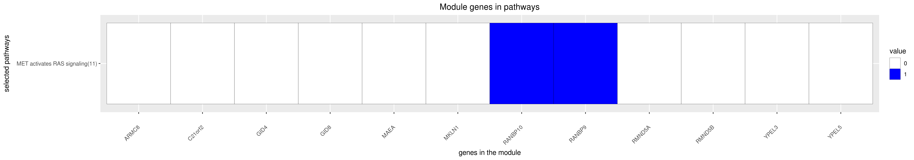

DREAM Module Identification Challenge – Consensus modules
PPI-STRING_Consensus_mod82
| Assigned name |
NA |
| Network |
PPI-STRING |
| Module ID |
PPI-STRING_Consensus_mod82 |
| Module size |
18 genes |
|
Module genes
This module comprises the following genes:
| Gene ID |
Gene Symbol |
Gene Name |
| 25852
|
ARMC8
|
armadillo repeat containing 8
|
| 755
|
C21orf2
|
cilia and flagella associated protein 410
|
| 91050
|
CCDC149
|
coiled-coil domain containing 149
|
| 79018
|
GID4
|
GID complex subunit 4 homolog
|
| 54994
|
GID8
|
GID complex subunit 8 homolog
|
| 10296
|
MAEA
|
macrophage erythroblast attacher
|
| 4289
|
MKLN1
|
muskelin 1
|
| 57610
|
RANBP10
|
RAN binding protein 10
|
| 10048
|
RANBP9
|
RAN binding protein 9
|
| 64795
|
RMND5A
|
required for meiotic nuclear division 5 homolog A
|
| 64777
|
RMND5B
|
required for meiotic nuclear division 5 homolog B
|
| 84926
|
SPRYD3
|
SPRY domain containing 3
|
| 80232
|
WDR26
|
WD repeat domain 26
|
| 29799
|
YPEL1
|
yippee like 1
|
| 388403
|
YPEL2
|
yippee like 2
|
| 83719
|
YPEL3
|
yippee like 3
|
| 219539
|
YPEL4
|
yippee like 4
|
| 51646
|
YPEL5
|
yippee like 5
|
|
Functional annotation
Modules were tested for enrichment in functional and pathway annotations using two complementary approaches:
1. To select a small number of specific / non-redundant annotations for each module, a regression-based approach was used;
2. To obtain the complete set of enriched annotations, an extension of Fisher’s exact test that takes annotation bias into account was employed (Wallenius’ non-central hypergeometric distribution).
Most specific annotations for this module
1Regression coefficient
2Fisher’s exact test nominal P-value
3Annotation source (Reactome, GO biological process (BP), molecular function (MF) and cellular component (CC))
4GO category or Reactome pathway
5High-level branch of annotation tree
Gene membership

All enriched annotations
Gene Ontology
11Nominal enrichment p-value (Wallenius’ noncentral hypergeometric distribution)
2FDR corrected p-value (Benjamini-Hochberg)
Reactome
| P-value1 |
FDR2 |
Term |
| 1.15e-02
|
8.9e-01
|
L1CAM INTERACTIONS
|
| 3.63e-02
|
1.0e+00
|
AXON GUIDANCE
|
|
11Nominal enrichment p-value (Wallenius’ noncentral hypergeometric distribution)
2FDR corrected p-value (Benjamini-Hochberg)
Mouse mutant phenotypes
11Nominal enrichment p-value (Wallenius’ noncentral hypergeometric distribution)
2FDR corrected p-value (Benjamini-Hochberg)
Generated on: Thu Aug 23 09:48:27 2018 - R2HTML